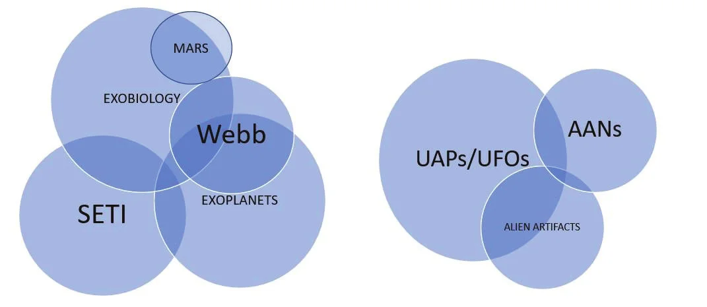

It’s not what happened. It’s what you can get a jury to believe happened. Philip Gerard (Raymond J. Barry)Bruckheimer, J. (Executive Producer): CSI: Crime Scene Investigation [Television series], United States, Paramount,
In this essay, the authors present key cultural themes and contexts that may be critical in evaluating and interpreting reports of unidentified aerial phenomena (UAP/UFOs) and extraterrestrial contact claims, such as alien abduction narratives (AANs). Specifically, they distinguish between forensic reports and contact narratives and highlight the impact of increasing cosmological awareness. Building on survey data that indicates a dramatic rise in public belief in extraterrestrial life and expectation for its discovery, if not current presence; and the Alien Fears study that led to a testable social transmission model for experiential narratives; a continuum model is proposed to distinguish among different observer reports and data relevant to the Extraterrestrial Hypothesis.
For as long as human consciousness has existed within Nature—and well before our capacity for self-reflection developed into science—our abilities for sensing and focused attention have generated a wide range of perceptions and interpretations of our environments. Human cultures have assembled these elements into stories, myths, narratives, and explanations. During the second half of the 20th Century, two distinct cultural streams based on witness reports of unidentified aerial phenomena (UAPs) achieved considerable social and intellectual prominence: reports of unidentified flying objects (UFOs), and extraterrestrial contact claims, including alien abduction narratives (AANs) Scribner, S.: Alien abduction narratives, in J. Lewis (Ed.): Encyclopedia of UFOs and popular culture, Santa Barbara (California), ABC-CLIO, Scribner, S.: Alien Fears: Toward a psychology of UFO abduction beliefs, unpublished doctoral dissertation, , https://independent.academia.edu/ScottScribner. These two streams—sometimes jointly called ufology--have come to reflect different subcultures with differing standards of evidence. Both rely foundationally on witness reports, but the subjects and objects of the “witnessing” can be problematic.
Existing literature offers dozens of proposed theories for UFO phenomena; most interpret them as some type of physical, psychosocial, or religious event, thus presumptively granting them ontological status. However, further examination reveals distinct differences between these categories of reports, including different perceiver and perception types. For example, formal UFO sighting reporters tend to be extraverted and realistically oriented; whereas some sources of AANs were found to be more introverted, artistic, and in many cases, they were discovered by outside professionals or journalists Mack, J. E.: Abduction: Human encounters with aliens, New York, Scribner, instead of self-reporting.
Wheeler () Wheeler, G.: Cosmology, in J. Lewis (Ed.): UFOs and popular culture: An encyclopedia of contemporary myth, Santa Barbara (California), ABC-CLIO, characterized these two UFO cultures as reflecting differences between Weldbild[Editor’s note] The German word is spelled Weltbild (“world picture”). (scientific) and Weltanschauung (worldview) concerns. Methodological parallels can be found in anthropology between etic (analytical) and emic (local, or folk) knowledge Pike, K.: Language in relation to a unified theory of the structure of human behavior, Glendale (California), Summer Institute of Linguistics, Goodenough, W.: In Pursuit of Culture, Annual Review of Anthropology, n° 32, pp. 1-12, ; or as products of explicit or implicit memory in developmental psychology (Van de Kolk, )[Editor’s note] This reference is missing from the chapter’s reference list. It probably refers to the psychiatrist Bessel van der Kolk and his book The Body Keeps the Score, published in .. Such a bicameral distinction can serve as a bridge to understanding that the story can be both true and strange; that is, it can form the basis for both forensic and philosophical or religious inquiry. Instead of presuming to uncover “what really happened,” an objective approach must first understand such phenomena as they present themselves and then propose investigatory methods that are appropriate to such understandings.
Research on unidentified flying objects (UFOs) and alien abduction narratives (AANs) has always been controversial. It has been suggested that ufology--the study of unidentified flying objects and related
phenomena--has failed as a science Sturrock, P.: The UFO enigma: A new review of the
physical evidence, New York, Warner Books, Jacobs, David (Ed.): UFOs and Abductions: Challenging the borders of knowledge, Lawrence
(Kansas), University Press, . When a Stanford University scientist says that UFO data would be
better
when it is scientifically collected,
the implicit message is that the previous fifty years of
study had produced little of value. In Wheeler’s terms,
there still is no agreement on what constitutes a legitimate First Contact Science Wheeler, G.:
Cosmology, in J. Lewis (Ed.): UFOs and popular culture: An encyclopedia of contemporary myth, Santa Barbara
(California), ABC-CLIO, . In terms of ufology’s credibility, some of
the questions raised by AANs resemble those in areas identified by sociologists as “wild psychotherapies” O’Keefe, D.: Stolen lightning: The social theory of magic, New York, Random House, .
Whether as forensic investigation or social science, ufology remains
on the margins. Marginal disciplines issue scientific disclaimers when they say, “Take a look at the evidence and
decide for yourself.” Instead of promoting critical scrutiny, such a presentation may cloak an in-group “agreement
to agree” because what constitutes evidence is predetermined by the social context. Sociologist James Lewis asserts that such intra-group knowledge comes about through
conversations.
Lewis, J.: personal communication, To the in-group, the evidence is what new arrivals are supposed to accept
by initiation into the group agreement.
Data reliability is a challenge that confronts any scientific researcher and becomes especially salient when
investigating anomalous phenomena. The objectives of an eyewitness reliability project include the development of
standards and procedures for evaluation of witness reports as they relate to
UAP/UFO phenomena. This dilemma can be seen by considering the contrasting
forms of evidence in the classification
system first devised by J. Allen Hynek. From “distant
lights in the sky” to “Close
Encounters of the Third Kind,”Center for UFO
Studies (cufos.org) Hynek sought to expand the conception of hard
core data
in order to set up criteria unique to the UFO problem.
Hynek, p. 38.
…what constitutes hard-core data for one field of study may not be considered so for another.
Hynek, J. Allen: The UFO Experience: A scientific inquiry, , Kindle reprint edition, ASIN: B07ZKQTNVK, , p. 38 Specifically, Hynek required accounts that
were made, in each instance, by at least two persons of demonstrated mental competence and sense of
responsibility
and therefore should not be rejected out of hand as spurious.
One might question whether even a highly trained and respected astronomer is qualified to determine mental competence in the clinical sense. The psychological state of an observer experiencing “high strangeness” evokes perceptual filters influenced by their past experiences and presuppositions. These conditions can result in quite different stories about what was witnessed and lead to different conclusions, depending on the observer. Taking into consideration the interactions of reality testing, fantasy imagery (imagination, hypnagogia, dreaming), and media influences, the difficulty of determining witness reliability can be profound, as summarized by Ioan Culianu () Culianu, Ioan: Out Of This World: Otherworldly Journeys from Gilgamesh to Albert Einstein, Boulder (Colorado), Shambala Publications, :
The outside world could not exist without the mental universe that perceives it, and this mental universe in turn borrows its images from perceptions… Thus, the world outside us and the world inside us are not truly parallel, for not only do they interfere with each other in many ways, but we cannot even be sure where one of them ceases to be and the other commences.
One objective of an eyewitness reliability project is the determination of factors that could provide a solid
basis for the confirmation or disconfirmation of the Extraterrestrial Hypothesis (ETH).Extraterrestrial hypothesis, Wikipedia
During his investigations, Hynek stated that there are no shortage of cases
and in subsequent decades, UAP
reports have only proliferated. From the same data, remarkably diverse conclusions have been drawn by researchers,
military spokespersons, scientists, ufologists, and even politicians, leading to
the primary conundrum: has the ETH been validated or not?
On the affirmative side are numerous advocates in the Disclosure Movement, including testimony of former governmental and military
personnel who have come forward with stories of “alien technology” and even alien beings. Dr. Steven Greer, MD, claims extensive briefings by highly placed government officials
with the testimony he gathered over the years from a variety of well-placed individuals.Testimony,
The Disclosure Institute In a report submitted to Congress, Greer states unequivocally, The evidence
and testimony presented in the following pages establishes…that we are indeed being visited by advanced
extraterrestrial civilizations and have been for some time.
https://waskosky.com/mirrors/DisclosureProjectBriefingDocument.pdf
Former Israeli space security chief Haim Eshed,
claims Israel and the United States have been dealing with an alien organization known as the 'Galactic
Federation' for ages.
https://www.gefenpublishing.com/product.asp?productid=2935
Even a casual review reveals a large number of books and articles claiming that we have been contacted.
From these, one might conclude that the ETH has already been verified, but it is significant that this supposition
occurs in the presence of a pervasive public belief that ETs exist.National Geographic: https://www.livescience.com/21216-americans-ufo-belief.html
Pew Research: https://www.pewresearch.org/fact-tank/2021/06/30/most-americans-believe-in-intelligent-life-beyond-earth-few-see-ufos-as-a-major-national-security-threat/
Despite the testimonies of highly credible individuals in positions to “know the truth,” and the plethora of “close encounter” narratives of
various kinds investigated by scientists such as Hynek and others, we have a scientific obligation to juxtapose the
contrary view of the null hypothesis.The U.S. government has no evidence that any life exists
outside our planet, or that an extraterrestrial presence has contacted or engaged any member of the human
race,
Phil Larson from the White House Office of Science and Technology Policy
reported on the WhiteHouse.gov website. In addition, there is no credible information to suggest that any
evidence is being hidden from the public’s eye.
https://mufon.com/2011/11/07/white-house-theres-no-sign-of-e-t-or-ufo-cover-up/
The most recent official U.S. Government document cites a relatively small number of unclassifiable cases as :…unidentified
due to limited data or challenges to collection processing or analysis…[requiring] additional scientific
knowledge to successfully collect on, analyze and characterize some of them.
Scientific opinion ranges widely from outright dismissal of most of the accumulated evidence pool, to acknowledgement of only the hypothetical probability of extraterrestrials, while also asserting the lack of contact asserted by the Fermi Paradox.https://www.seti.org/fermi-paradox-0 Dick () summarized the dismissal of UFO type reports as follows:
At least three circumstances joined in precipitating the decline of the extraterrestrial hypothesis of UFOs in mainstream science. First, even taking into account the failings of the Condon Study, no incontrovertible evidence was produced in favor of the hypothesis, and its champions realized that to maintain the extraterrestrial theory lacking such evidence was an obstacle to further study of the UFO phenomenon. Second, “New Wave” theories of UFOs led away from the extraterrestrial hypothesis and toward ever more ethereal ideas associated with the New Age movement that grew in the last quarter of the twentieth century, confirming to scientists that this was a subject to be avoided. Finally, the rise of claims that, if true, would have proven the extraterrestrial hypothesis -ancient astronauts, spaceship crashes, contactees, and abductees- were based on evidence (such as statements under hypnosis) that most scientists could not accept, thereby bringing the entire extraterrestrial hypothesis into disrepute. Pervading all of these factors was the question of scientific method and the nature of evidence, questions that mean a great deal to working scientists but often all too little to the public.Dick, S. J.: The Biological Universe, Cambridge (UK), University Press, , p. 308
The Fermi Paradox cites this lack of evidence as further suggesting that the ETH must be answered in the negative--humans are the only inhabitants of our Milky Way galaxy--or else that some fate must befall advanced civilizations if they do arise that prevents the inevitable expansion into the galactic space that would assure contact (statistically speaking).
Well before astronomical advances confirming the existence of thousands of exoplanets, Brin () reviewed the theoretical positions taken at the time regarding the lack of evidence confirming the ETH. Most of these concepts are still referenced in current literature, at least by scientists willing to comment on these subjects. Brin concluded that:
Some of the branch lines discussed here serve the optimists, while others seem pessimistic to an unprecedented degree…This survey demonstrates that the Universe has many more ways to be nasty than previously discussed. Indeed, the only hypotheses proposed which appear to be wholly with observation and with non-exclusivity –“Deadly Probes” and “Ecological Holocaust”- are depressing to consider.Brin, A. D.: The 'Great Silence': The Controversy Concerning Extraterrestrial Life, Quarterly Journal of the Royal Astronomical Society, vol. 24, n° 3, pp. 283-309, [Editor’s note] A word is evidently missing from the quotation as printed (“wholly [consistent] with observation”).
Also prior to the discovery of any confirmed exoplanets, Barrow and Tipler () took a particular view of human uniqueness
that centers on the “Cosmological Anthropic
Principle” (CAP). This view demands that the universe be as big as it is in order to evolve just a single
carbon-based life-form.
Barrow, J. & Tipler, F.: The Cosmological Anthropic
Principle, Oxford University Press, , p. 3 That life-form is
humanity, and the evidence is very strong that intelligent life is restricted to a single planet
—Earth, hosting an extremely fortuitous
accident.
To avoid our planet’s inevitable end, should interstellar travel become possible, it will only be
humans populating the galaxy and perhaps the entire cosmos. Consequently, this view is a prima
facie dismissal of the ETH and all related evidence from other sources.
One might conclude that the discovery of so many exoplanets and the new calculations of the number of Earth-like
planets in habitable zones makes a unique Earth hypothesis seem rather quaint. In a proposal for seeking signs of
life on Earth-like exoplanets, Suto () noted that
…the emergence of life itself may not be such a rare event as long as the relevant environment, which we do not
yet understand exactly, is provided. A simple application of the Copernican Principle suggests that a large
fraction of temperate planets with oceans and lands will inevitably develop a certain type of life.
Suto, Y.: Beyond a pale blue dot: How to search for
possible bio-signatures on earth-like planets, arXiv:2006.11451, p. 2[Editor’s
note] The arXiv identifier 2006.11451 denotes a preprint submitted in ,
not a paper from .
Building on the different models of investigation described above, we see the current state of ETH research in the following categories:
Using a two-culture model, types of claims can be diagrammed as shown in Figure 1:

We must ask whether the narrative information developed on the right side of this diagram--of which there is an abundance--can have any impact on solving the ETH. The scientific approach to the ETH demands the sources on the left be considered as the primary data in approaching this problem. Hynek also bracketed the right-side categories as not meeting his eyewitness criteria.
On the right side of the diagram, there are an almost unlimited number of proposed hypotheses, and most of them are non-disconfirmable Scribner, S.: Alien Fears: Toward a psychology of UFO abduction beliefs, unpublished doctoral dissertation, , https://independent.academia.edu/ScottScribner. The problematic nature of AAN research derives from approaching the phenomenon from any context that includes a predefined set of assumptions: physical, psychosocial, or religious. In almost seventy years of AAN research, these approaches have produced a stalemate instead of additional clarity. Yet even the possibility of hoax and deception does not cause interest in the phenomenon to recede. To be objective, even a psychological approach should be based what is known: human narratives, human values and human behaviors, not speculation. It must consider these narratives in terms of what is human within them, rather than shift from one theoretical context to another--ground much treaded by others--without resolution.
Some UFO researchers are loathe to hear psychosocial interpretations of the AAN phenomenon Jacobs, D. & Shermer, M.: KPCC-FM radio interview, . If AANs are demonstrated to be psychological--subject to theories of cognitive and emotional development—they might lose appeal as either “real” physical science or “true” spiritual revelation. Despite professional psychology’s century-long quest for acceptance, its explanations are still perceived to hold a lower credibility than those of the physical sciences. However, deep psychological roots are tapped by UFOs and AANs, and our current psychological tools may not be fully adequate to investigate their implications. For example, self-worth can be enhanced through identification with superior beings (alien or otherwise). The belief that “I’ve been selected since childhood” implies specialness and provides a cosmic context for a unique individual life.
Intense emic debates have arisen among “those who believe” claims of alien contact but who differ about the intentions of “visitors.” One faction fears imminent invasion or human-alien conspiracies or both (represented by Budd Hopkins, Jacques Vallee, and David Jacobs); another camp welcomes alien “salvation” (Leo Sprinkle, Edith Fiore, Richard Boylan, and perhaps John Mack); and a third group remains neutral about alien intentions (Raymond Fowler and Whitley Strieber). These differences may presage forms of UFO religious group such as the Aetherius Society Scribner, S. & Wheeler, G.: Cosmic intelligences and their terrestrial channel: A field report on the Aetherius Society, in J. Lewis (Ed.): Encyclopedic sourcebook of UFO religions, Amherst (New York), Prometheus Books, , pp. 157-171. The religious issues are discussed at length by Lewis and others in The Gods Have Landed () Lewis, J. R. (Ed.): The gods have landed: New religions from outer space, Albany (New York), SUNY Press, .
In their disputes, many believers and debunkers alike may impose implicitly materialist interpretations on the same phenomenological gestalt. Both sides try to hold their ground as champions of common sense, whether about flying saucers or swamp gas. However, each side focuses its energies on some specialized forensic and scientific method or theoretical framework, which narrows their attention away from the totality of the human experience. In other words, all sides can become hypnotized by their methods. The result is little movement toward a definitive determination of actual First Contact.
In evaluating witness credibility, we must also consider the increasing societal awareness of cosmological discoveries for both UAP/UFO and AAN narratives. Although humans studied the skies for millennia, the concept that “the heavens” is a vastness of space and not a mythological realm of gods and angels has occurred mainly during the last 500 years. Before astronomy became independent of astrology as a realistic and materialist model of the sky, the primary cosmological models were the mythological—derived from earlier conceptions of a living Nature--and Plato’s idealism, which taught that what we see are mere shadows of a hidden reality. Today one still hears the expression, “Heavens above!,” “the Man upstairs,” and so on; and “ascending into Heaven” remains a religious concept. The dramatic change in our modern conception of the sky acts as a primary evolutionary motivator in the search for and expectation of extraterrestrial life, and especially the prospect of intelligent, technologically advanced “aliens.”
Carl Sagan, writing in the popular magazine Astronomy, noted that the ancients
understood that five, and no more, of the bright points of light that grace the night sky
moved along with
the Sun and Moon. These seven were important to the
ancients, so they named the wanderers after gods--not any old gods, but the chief gods…
Carl Sagan: The First New Planet, Astronomy, , p.
35 The sky was the realm of what Rudolf Otto described as the Mysterium tremendum et fascinans, a numinosity beyond human understanding, or as Otto described the
numinous, as wholly Other.
Rudolf Otto (translated by John W. Harvey): The Idea of the
Holy, Oxford U. Press, ed., p. 25f.
With increasing study and attention (fascinans), the heavens began to resolve into an object of observation. The movements of the “wanderers” were found to be predictable, and this knowledge eventually appeared in Ptolemy’s monumental AlmagestAfter the Arabic for “the greatest.”, the dominant cosmological perspective that reigned for twelve centuries. This anchored a certain concept crucial to the changes to come:
And so, in general, we must state that the heavens are spherical and move spherically; that the earth, in figure, is sensibly spherical also when taken as a whole; in position, lies right in the middle of the heavens, like a geometrical centre; in magnitude and distance, has the ratio of a point with respect to the sphere of the fixed stars, having itself no local motion at all.Ptolemy: The Almagest, Great Books edition, U. of Chicago, , p. 7
With the Copernican Revolution,Thomas S. Kuhn: The Copernican Revolution, MJF Books,
the moving earth was initially considered only as a convenient
fiction for computational purposes. Authors who applauded Copernicus’
erudition, borrowed his diagrams, or quoted his determination of the distance from the earth to the moon, usually
either ignored the earth’s motion or dismissed it as absurd.
Thomas S. Kuhn: The
Copernican Revolution, MJF Books, , p. 186 Interestingly, Kuhn notes that questions that were raised by theologians could
be seen as the seeds of a new predicament: Are we alone in the Universe? Kuhn writes:
When it was taken seriously, Copernicus’ proposal raised many gigantic problems for the believing Christian. If there were other bodies essentially like the earth, God’s goodness would surely necessitate that they, too, be inhabited. Worst of all, if the universe is infinite, as many of the later Copernicans thought, where can God’s Throne be located? In an infinite universe, how is man to find God or God man?Thomas S. Kuhn: The Copernican Revolution, MJF Books, , p. 193
As documented by Ramon Mendoza,Ramon Mendoza: The Acentric
Labyrinth, Element Books Limited, these questions were to be
challenged head on by the remarkable thinker of the Copernican era, Giordano Bruno.
Copernicus unquestionably had dealt a very serious blow to humankind’s insatiable need for
centers…[but]…The decisive blow to mankind’s desperate need for security
came from its fiercest advocate,
The first man in European post-medieval history to formulate explicitly and clearly that the universe has no
center…
Ramon Mendoza: The Acentric Labyrinth, Element Books Limited, , p. 73 His doctrine of the infinite universe, multitude of suns with
their own planets, possibly inhabited, and the lack of any centrality for earth or Sun pushed the ending of a
geocentric cosmos across the philosophical threshold that had held since Aristotle. It also earned him eventual execution, burned at the stake in CE.
Observational astronomy would eventually confirm and expand on these early intuitions. Galileo’s discovery of moons around Jupiter is usually cited as the breakthrough
observation that settled the concept of “other worlds.” However, an even greater discovery seems often overlooked.
As translated, The next thing I observed…the Milky Way. With a telescope this can be perceived so palpably that
all the disputes that have tormented philosophers for so many centuries are quashed by sheer ocular proof…Point
your telescope in any direction within the galaxy and at once a great mass of stars comes into view.
Galileo Galilei: Neither Known Nor Observed by Anyone Before (translated), in D. Danielson (ed.):
The Book of the Cosmos, p. 152
Carl Sagan elaborated on this theme in his article:
It was with a real sense of surprise that people in heard about a new planet discovered through a telescope. New moons were comparatively unimpressive, especially after the first six or eight. That there were new planets to be found and that humans had devised the means to do so were both considered astonishing. If there is one previously unknown planet, there may be many more…Carl Sagan: The First New Planet, Astronomy, , p. 37
During the 19th Century, historical momentum toward a possibly inhabited universe continued to gain traction with
Darwin’s evolutionary theory, suggesting a plausible template for life developing
elsewhere. At the end of that century, an astronomer named Giovanni Schiaparelli thought he was seeing canals on Mars, and this view was advanced by another astronomer,
Percival Lowell, who took the position that the only logical conclusion was evidence of
engineering, and thus intelligence, on Mars. Interestingly, H. G.
Wells’ War of the Worlds, published in
, and would be one of the earliest stories to detail a conflict between
mankind and an extraterrestrial race.
The anticipation of contact with—and fear of--extraterrestrial life was brought into vivid focus in by Orson Welles. His Halloween radio program caused
some listeners to believe that an invasion by extraterrestrial beings was in fact occurring. Although reports of
panic were mostly false and overstated.
https://en.wikipedia.org/wiki/Orson_Welles This
could also be cited as an instance where “set and setting” contributed to attributions that otherwise would have
been dismissed, as the program started with a clear disclaimer of legitimacy as a dramatization.
Reports of unidentified aerial phenomena (UAPs) have proven elusive objects of study even when sponsored by governmental agencies around the world.David Tormsen: 10 Official Government Programs That Studied UFOs, ListVerse The most recent report from U.S. Office of The Director of National Intelligence reached essentially the same conclusion as all the other studies:
Although most of the UAP described in our dataset probably remain unidentified due to limited data or challenges to collection processing or analysis, we may require additional scientific knowledge to successfully collect on, analyze and characterize some of them. We would group such objects in this category pending scientific advances that allowed us to better understand them. (p. 6)
Despite a history of disparaging comments from official sources, UFO sightings have persisted in abundance. Following the first widely publicized appearances over Mt. Rainier, Washington, and Roswell, New Mexico, as investigators collected more reports, a public format of those seeking answers coalesced into various investigative NGOs collectively known as ufology. Collecting many more incidents and generating a huge volume of popular publications, ufology has seemed in a constant search for more suggestive evidence. The principal result has been the widely believed conjecture that UAPs are signs of alien visitations and contact.
Geocentric belief systems stand to lose credibility when extraterrestrial life becomes a public matter. Many religious people still strongly feel that Earth is a unique center of cosmological destiny, wherein God will remake the heavens and earth in an apocalyptic moment.Joshua M. Moritz: Big Bang Cosmology and Christian Theology, ch. 17 in Joseph Seckbach & Richard Gordon (Eds.): Theology And Science: From Genesis to Astrobiology, World Scientific Publishing Co., Some see UFOs as demons working for “the Enemy” or as the opposite, angels working for God Graham, William: Angels: God’s secret agents, Dallas (Texas), Word Publishing, . The shadow cast by these conceptions is seen in a framework of analysis that usually begins with the question, “Do you believe in UFOs?” Science cannot run the risk of acting as simply another belief system.
Ufology must depart the arena of belief and individual experience and instead work from and toward a public consensus in verifying the ETH or First Contact. Alien contact would profoundly affect everyone on the planet, so the search for an answer to the UFO enigma is everywhere equally important to everyone. To this end, investigations of anomalous phenomena must employ methods that are specified before a report is made. By bringing psychological methods and approaches (such as neurophysiology, social cognition, and narrative theory) to UFO and AAN data, we respect the subtleties of human experience and consider data that many interested parties have arbitrarily excluded, keeping the door open to future discoveries.
We have contended that alien abduction narratives are given little credibility in part because investigators have become dependent on less reliable methods to analyze their results Wheeler, G. & Scribner, S.: Snap Out of It! or The Hypnotic Regression of UFO Research, Continuum Magazine, , pp. 9-11 Brookesmith, P.: UFO: The complete sightings, New York, Barnes & Noble, . “Recovered memories” are prominent in the discussion about alien abduction narratives because this is one cornerstone of the AAN edifice. There are many forms of psychological trauma, and their origins and outcomes vary widely. A schizophrenic can be traumatized by a psychotic episode. A dreamer can awaken horrified and be unable to sleep again even without evidence of any unusual environmental changes. These private forms of trauma can be traced to brain disease or dysfunction, but they are nonetheless still traumatic to the individuals involved. In most AAN research so far, the primary emphasis has been on detailing the various narratives recalled by subjects under hypnosis or through spontaneous revival of memories made “valid” by criteria of “consistency,” “sincerity,” and the ostensible presence of psychological symptoms of traumatic stress.
Much so-called evidence for anomalous trauma comes from anecdotal recollections of hypnotized witnesses and from “recovered memories” uncorked by researchers who have shown less interest in questioning their own methods publicly than in benefiting from book and movie deals, for which they have been criticized by UFO researcher Jacques Vallee () Vallee, Jacques: Consciousness, culture, and UFOs, Noetic Sciences Review, n° 36 (Winter ), Viking, pp. 6-11; 30-36.
Storytellers--as we prefer to call those whom other researchers have variously labeled contactees, abductees, or experiencers--have made claims that are questionable from a scientific perspective. These claims are typically relegated to the Metaphysical and New Age sections of bookstores; however, given a certain set of historical circumstances, growing credence in these reports could result in significant social upheaval.
No specific case that claims eyewitness contact with extraterrestrials--whether a hostile abduction scenario or a euphoric Space Brother rapture—currently confirms the ETH to the satisfaction of the entire research community, including scientists in all relevant areas. This fact implies at the very least that the investigations are incomplete or can be dismissed by most scientists as spurious and of no value in disconfirming the null hypothesis (the view held by most scientists). In the latter case, we are more likely dealing with a psychological phenomenon of a type that still holds a controversial place within the consensus reality of normal science Kuhn, Thomas: The structure of scientific revolutions, Chicago (Illinois), University Press, .
Descartes' Evil Genius argument serves as a caution to those who would have us believe that our scientific research is ineffective because “they” can outsmart us at every turn and hide their presence until they are ready to be revealed. Typically, governments are assumed to be complicit in this scenario. Such a self-contradictory stance implies that no research can be effective, so by implication, no research would be useful. If an Evil Genius hides purposefully, then he must exist. Case closed.
We must not yield to closed-system models. A scientific approach always must begin with the null hypothesis: that there are no aliens visiting us in the night, therefore all contacts and sightings most likely have a natural or psychological explanation. When the null hypothesis is proven wrong with a less than significance chance that the proof itself is false, we will have crossed the threshold in proving contact, and we can claim an end to doubt. At present, AAN narratives from recovered memories cannot sustain this criterion. This is the same criterion that any individual must use in judging his or her own subjective experience. How likely is it that what one believes happened ‘actually’ happened? How open is the reporter to alternative explanations for what they believe?
The Alien Fears study Scribner, S.: Alien Fears: Toward a psychology of UFO abduction beliefs, unpublished doctoral dissertation, , https://independent.academia.edu/ScottScribner proposed that an alien abduction narrative can act as a “meme container” for a matrix of very human fears. By bracketing the question of UFO sighting reports as a forensic domain, the Alien Fears study examined five prominent public AAN texts and proposed a Storyteller-Narrator model, including a non-linear chronological structure to examine their social salience and transmission. The study concluded that AANs (specifically) are created and propagated through society because they address personal and social values and concerns for their storytellers, narrators, and other members of society at large. This study also developed a social transmission model which has since been expanded to detect specific linguistic data and media imagery that compose AANs Scribner, S. & Wheeler, G.: The Alien Other: Cosmology and social transmission of UFO narratives, in press, .
It is time for an original approach in ufology and especially for the study of narratives of human-extraterrestrial contact. This requires an approach which neither dismisses unusual narratives out of hand nor invests claims with presumed credibility. For example, researchers might seek out and interview persons who narrated an alien abduction experience who later, with time or therapy, came to a different interpretation of events.
A scientific ufology must have as its highest priority to establish its conclusions about UAPs and AANs in the most transparent manner. Ufological researchers must extend their communication beyond the converted and claims to “aliens among us.” For ufology to earn scientific status, the improvement of its standards and methods is overdue. The challenge is considerable. Funding for this kind of intensive research is difficult to obtain, in part because the chimeras of illusion may prove more profitable than the discipline of the null hypothesis. Where is the appeal and political fervor to fund a research proposal that begins with the appropriately tentative scientific assumption that there are no alien visitors? Despite no currently accepted confirmation of exobiology or ETI, the scientific community is dedicated to finding the answer. A true First Contact Science would do well to take this same road and apply its own methods in search of an answer.
A validated UFO report or alien abduction narrative has the potential to be a pivotal “working fact” for the disciplines of ufology or psychology or both. Carefully chosen cases, using pre-established criteria, should at least receive the special professional research attention afforded a criminal investigation. The payoff comes whether we reach certainty with the best methods we have or gain greater knowledge of human psychology and belief formation from each attempt. We may confirm a First Contact during the process. The best service we can perform is to investigate with the thoroughness of the laboratory scientist, the practical awareness of the forensic investigator, and the sensitivity of the clinician. Without all three approaches, we are still chasing shadows on cave walls. Plato already warned us about that.